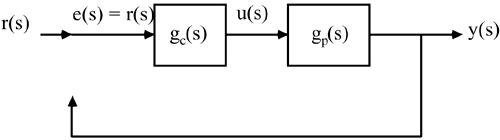
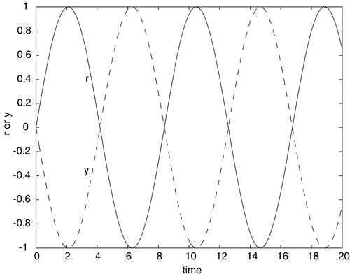
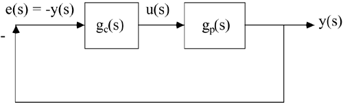

| [ Team LiB ] |
|
7.4 Closed-Loop Stability ConceptsSections 7.1–7.3 introduced frequency response analysis, including the construction of Bode and Nyquist plots. In this section we illustrate how Bode and Nyquist plots can be used to determine the stability of a closed-loop system. We also show how to use these plots to tune controllers for robustness, that is, to be able to tolerate a given level of model uncertainty. The tests used involve information about the controller and process in open-loop. The open-loop analysis that we use in this chapter is different from that used in model-based control chapters. Consider the case where the loop has been opened, as shown in Figure 7-10. We introduce the concept of Bode stability using the following thought experiment. Assume that the setpoint applied to the "open-loop" system in Figure 7-10 is a sine wave. Also assume that the controller has been tuned so that the output lags the setpoint by 180° and has the same amplitude as the setpoint, as shown in Figure 7-11. Figure 7-10. Feedback control loop has been "opened." Figure 7-11. Process output (y) lags setpoint (r) by 180°. Realize that –y(t) is exactly 180° out of phase with y(t), which means that –y(t) is equal to r(t). Now consider the case where the setpoint signal, r(t), is suddenly stopped and simultaneously the loop is closed, as shown in Figure 7-12. This means that the error signal will simply be –y(t), which is identical to r(t). Since it is identical to r(t), then every signal on the control loop diagram remains the same. The output continues to oscillate with the same frequency and magnitude as before the loop was closed. We refer to this control loop as nominally stable. Figure 7-12. Feedback loop has been "closed." Consider the case where the output is exactly out of phase (f = –180°) with the setpoint in the open-loop, but the amplitude of the output is less than the setpoint. Therefore the amplitude ratio (|y|/|r|) is less than 1. Then, if the loop is closed, the output decreases each time "around the loop" and the system is stable. In contrast, consider the case where the output is exactly out of phase with the setpoint when the control loop is open, but the amplitude of the output is greater than the setpoint. Then, if the loop is then closed, the output increases each time "around the loop" and the system in unstable. The thought experiment that we have just performed is the basis for the Bode stability criterion stated in the next section. |
| [ Team LiB ] |
|